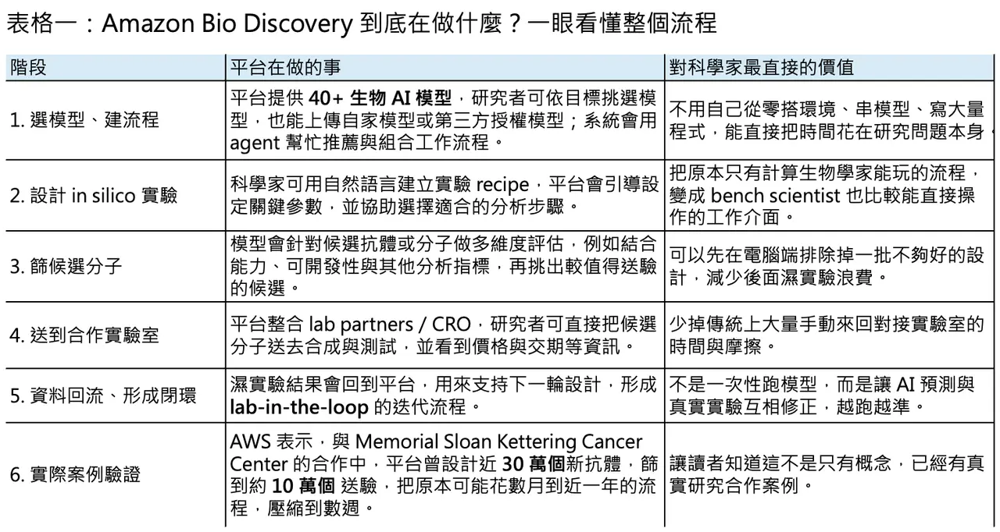
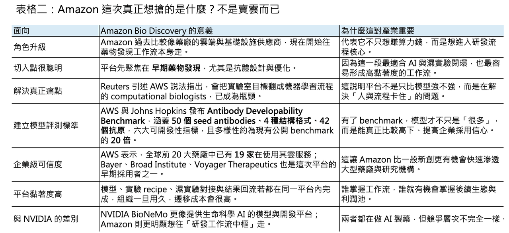

不只賣雲，Amazon 也要下場定義 AI 製藥：40+ 生物模型、抗體基準資料庫與 lab-in-the-loop，亞馬遜想吃下的是新藥研發的作業系統
📌 過去幾年，科技巨頭切入生命科學，大多還停留在兩個角色：一種是賣算力，另一種是賣通用 AI。真正難的，是再往前跨一步，直接碰觸藥物發現這個最核心、也最挑剔的環節。因為這不只是把模型丟給研究員用而已，而是要同時解決模型選擇、資料標準、實驗流程、濕實驗驗證、結果回流與團隊協作這一整串問題。4 月 14 日，Amazon Web Services 正式推出 Amazon Bio Discovery，很明顯就是衝著這一層來的。這不是一個單純的生命科學工具箱，也不是把幾個生物模型包成介面而已；它更像是一個面向早期藥物發現的 AI 工作平台，試圖把計算設計、模型評估、實驗對接與資料回流，全部拉進同一個系統裡。
分享這篇分析
把這篇文章轉給關注生技醫藥、公司研究或資本市場的朋友。
這件事之所以值得關注，不在於 Amazon 現在才進入醫藥，而在於它過去其實早就卡在產業裡面。AWS 自己披露，全球前 20 大藥廠中已有 19 家使用 AWS 來承載 generative AI 與 machine learning 工作負載。也就是說，Amazon 原本就已經是藥廠的底層基礎設施供應商，只是多數時候扮演的是「看不見的水電系統」：資料放在它的雲上，運算跑在它的 GPU 與服務上，安全與隱私由它兜底。但這次不一樣。Amazon Bio Discovery 代表 Amazon 不再只滿足於賣底層，而是開始往上層工作流走，直接切進新藥研發最有價值的那段流程，從 infrastructure provider 往 workflow orchestrator 升級。
如果要用一句話概括 Amazon Bio Discovery，它真正想做的，是把原本只有少數計算生物學家能玩的東西，變成濕實驗科學家也能直接使用的系統。根據 AWS 官方說法，這個平台目前整合了 40 多個生物 AI 模型，包含來自 Apheris、Boltz 等合作方的模型，並支援用戶上傳自有模型或導入第三方授權模型。更重要的是，平台不是要求研究者自己去理解每個模型的輸入格式、輸出限制與評估指標，而是透過 agentic assistants 幫使用者挑模型、配參數、串流程、看結果，甚至讓科學家能用自然語言建立實驗 recipe，把原本很碎、很工程化的流程，改造成更像任務導向的工作環境。這裡最關鍵的不是「AI 很厲害」，而是 Amazon 想把門檻降低到連不會寫 code 的 bench scientist 也能用。
01｜它不是在賣模型，而是在解組織瓶頸

🧠 這也是 Amazon 這次最聰明的地方。AI 製藥這幾年最大的瓶頸，從來不只是模型夠不夠強，而是整個團隊的工作流非常容易卡住。計算生物學家往往得花大量時間做模型評估、環境搭建、資料管線、訓練與推論資源調度；濕實驗科學家則通常最懂標的、最懂生物學問題，但不一定熟悉模型如何搭配、參數如何設、結果如何解讀。於是，理論上應該是「AI 幫人加速」，實務上卻常常變成「懂 AI 的那幾個人變成新瓶頸」。AWS 在對 Reuters 的說明中甚至直接點名，能把實驗室目標翻譯成機器學習 pipeline 的 computational biologists，已經成為整個產業的 bottleneck。Amazon Bio Discovery 想解的，本質上就是這個組織級瓶頸。
02｜先從抗體下手，因為這是最適合做閉環的場景

🔬 官方目前把應用場景聚焦在抗體發現與抗體優化。這個選擇非常合理。因為抗體研發本來就高度依賴結構、生物物性與可開發性評估，也很適合做 lab-in-the-loop。Amazon 在產品頁面裡描述得相當清楚：研究者先從模型 catalog 與 benchmark 出發，建立用於抗體設計的多步驟工作流；接著用 AI agent 協助設計實驗、選擇候選序列，並在送往實驗室之前先做一輪 in silico 的篩選與風險排除；最後再把候選分子送給整合的 lab partners 做合成與測試，實驗結果會自動回流到平台裡，用於下一輪模型微調與候選更新。這種模式的價值不在於「取代科學家」，而在於把原本一次性、分散式、靠人工接力的流程，變成可以反覆迭代的閉環系統。
這也是為什麼我不太認同把它粗暴描述成「7x24 全自動實驗室」。嚴格說，Amazon 這次推出的不是 lights-out lab，也不是機器人自己從設計做到全部 wet lab 的 fully autonomous science。它比較接近的是一種 lab-in-the-loop 的 agentic orchestration layer：模型選擇、流程建構、候選排序與濕實驗對接，被放進同一個平台中持續循環。真正的濕實驗，仍然由外部合作實驗室或 CRO 執行；真正的科學判斷，也仍然需要研究者參與。Amazon 自己對 Reuters 也明講，這套系統的目的是 augment，而不是 replace 科學家與 CRO。這個分寸很重要。因為 AI 製藥現在最怕的，不是技術不夠炫，而是宣傳超過現實。Amazon 這次若說有野心，野心不是自稱發明全自動科學家，而是試圖先吃下「AI 驅動的實驗工作流」這個關鍵接口。
03｜真正重要的，可能不是平台本身，而是那套 benchmark

🧪 在這套平台敘事裡，4 月 14 日同天公布的另一件事，其實同樣重要，甚至可能更重要：AWS 與 Johns Hopkins University Gray Lab 共同發布 Antibody Developability Benchmark。這個資料庫不是附屬配角，而是 Amazon Bio Discovery 的一塊關鍵地基。因為當今天市場上已經有愈來愈多蛋白質、抗體與分子設計模型時，真正困難的不再只是「有模型可用」，而是「你怎麼知道哪個模型真的比較好」。如果沒有公開、異質、而且有 wet-lab ground truth 的 benchmark，模型比較就很容易變成各說各話。這次 AWS 與 Johns Hopkins 做的事情，本質上就是替這個混亂市場建立共同評測語言。
這個基準資料集的規模與設計，也比一般新聞稿寫得更值得細看。根據 AWS 與 Johns Hopkins 公布的內容，Antibody Developability Benchmark 涵蓋 50 個 seed antibodies、4 種結構格式、42 個抗原靶點，並測量 expression、purity、thermostability、aggregation、polyreactivity 與 hydrophobicity 六項抗體可開發性指標。四種結構格式包括 IgG、VHH、NearGermline-IgG 與 scFv。官方強調，它在抗體格式、抗原靶點與 developability profiles 上的多樣性，大約是目前公開文獻中常見 benchmark 的 20 倍。更有意思的是，它不只納入「可開發性好」的樣本，也刻意納入系統性突變後可開發性較差的變異體，並且所有資料都經過 wet-lab 驗證。這讓它不只是比較好看，而是真的更接近現實世界的研發問題。
還有一點常被忽略：這個基準資料集支援 zero-shot learning 評測。這代表模型在沒有先接觸這批 benchmark 資料的情況下，被拿來做性能比較，有助於降低 data leakage 的疑慮。對做模型的人來說，這件事極有價值。因為近年太多生物模型的評估都建立在 proprietary data 或相對單一的 public data 上，最後得到的不是「哪個模型真正更好」，而是「哪個模型剛好在這個窄資料集上表現比較漂亮」。如果 Amazon 想要讓平台上的 40 多個模型不只是多，而是真的能比較、能篩選、能被企業放心採用，那這種帶有共識基礎的 benchmark 幾乎是必需品。AWS 也已經把這套 benchmark 結果直接嵌入 Amazon Bio Discovery，後續還會再加入更多 benchmark。
04｜Amazon 真正想搶的，不是工具，而是作業系統位置
⚙️ 從商業策略看，這件事就更有意思了。因為 Amazon 現在做的，不只是把 BioNeMo 類型的平台複製一遍，而是試圖把競爭層次往上拉。NVIDIA 的 BioNeMo 已經是生命科學 AI 的核心玩家之一，定位是 AI-driven biology and drug discovery 的開發平台，提供模型、資料集、工具鏈與部署能力，並在 2026 年持續擴張 lab-in-the-loop workflow 與開源模型家族。Amazon 這次切進來，不是純粹比誰模型更多、誰 GPU 更強，而是比誰更能把企業級資料隔離、模型目錄、benchmarks、agentic workflow、CRO 對接與組織知識沉澱，全部變成同一個產品體驗。說得更白一點，NVIDIA 更像是在賣生命科學 AI 的引擎與開發平台，Amazon 則開始把自己推向「新藥研發作業系統」的位置。這兩者會重疊，但不完全相同。Amazon 甚至連 BioNeMo 早期都曾可跑在 AWS 上，現在等於正式往上層應用面反攻。
而且 Amazon 顯然不打算把 Bio Discovery 只做成「抗體設計工具」。Reuters 引述 AWS 說法指出，Bayer、Broad Institute 與 Voyager Therapeutics 已是早期採用者；更早前，Amazon 與 Memorial Sloan Kettering Cancer Center 及 Twist Bioscience 的合作中，平台曾用多模型生成近 30 萬個新抗體分子，再收斂到約 10 萬個候選進入實驗驗證，把原本可能需要數月的工作壓縮到數週。這種敘事的真正重點，不只是「速度很快」，而是 Amazon 開始能舉出有頭有臉的機構案例，證明這套平台不是 demo，而是正在進入真實研發組織。當平台一旦被真正用進去，企業遷移成本會很高，因為你搬走的不只是模型，而是整套實驗 recipe、資料沉澱、團隊習慣與外部合作接口。這才是平台型生意最可怕的地方。
05｜它踩中的，不只是技術點，而是整個產業關係的轉折點
🚀 如果再把時間點放進來看，Amazon 選在現在下場，也非常耐人尋味。4 月 14 日，Novo Nordisk 與 OpenAI 正式宣布合作，要把 AI 應用到新藥發現與交付流程；同一個月，Anthropic 收購 Coefficient Bio 的消息也在市場傳開。這代表科技公司與藥廠之間的關係，正在從「我賣你雲」或「我賣你通用模型」往更深的共創關係移動：直接碰 drug discovery、碰臨床決策、碰企業資料與內部工作流。Amazon 這次推出 Bio Discovery，正好踩在這個轉折點上。它不是第一家進來的，也不會是最後一家，但它的優勢是：它不是從零開始，它已經站在藥廠最底層的資料、運算與安全基礎之上。
更值得注意的是，Amazon 的野心顯然也不只停在早期發現。AWS Life Sciences Symposium 2026 的議程已經清楚顯示，AWS、BCG 與 Merck 正在推進 AI-enabled site selection，試圖改善臨床試驗站點選擇這個出了名耗時又容易拖慢開發節奏的瓶頸。從早期發現到臨床執行，再到商業與醫學事務，AWS 已經不再只講單點工具，而是在描繪一條更完整的生命科學 AI 基建地圖。這意味著 Amazon 真正想做的，可能不是一個幫你找抗體的應用，而是一整套跨越 discovery、development 與 commercial 的 AI infrastructure stack。誰先把這種 stack 做出來，誰就不只是吃到一段預算，而是有機會吃下整條價值鏈。
06｜最後還是要潑一點冷水
❄️ 但也必須說一句冷水。Amazon Bio Discovery 現在再怎麼熱，仍然是早期藥物發現工具，而不是已經證明能把臨床成功率系統性拉高的 magic machine。AI 在藥物發現的價值，短期內比較可能體現在前期設計效率、候選篩選品質、實驗節奏壓縮與團隊協作效率上；至於它能不能顯著提升 IND 後的成功率、降低臨床失敗率，現在還不能講得太滿。Jefferies 分析師對 Reuters 的看法就相對務實：AI 不一定會讓儀器與研發工具需求下降，反而可能因為實驗節奏變快，讓整體工具支出上升。換句話說，AI 製藥的下一輪競爭，不會只是模型之戰，而是誰能把模型真的嵌進真實研發組織，並讓更多實驗被做出來。
所以，這次 Amazon 真正值得關注的，並不是它「也來做 AI 製藥」這麼簡單，而是它開始把生命科學當成一個需要被平台化、工作流化、資料閉環化的產業。從前大家以為科技巨頭進醫藥，最多是賣 GPU、賣 LLM、賣雲；現在看起來，真正大的戰場其實是：誰能成為科學家每天打開的那個入口。Amazon Bio Discovery 的意義，就在於它想從基礎設施供應商，進一步升級成研發流程的中樞。
📍 如果這條路走得通，Amazon 要賺的就不只是算力錢，也不是模型 API 的調用費，而是整個 AI 製藥時代裡最有價值的一層：誰定義工作流，誰就有機會定義生態。
參考資料：
[0]: 各公司官網＆公開資料
[1]:
Learn about the general availability of Amazon Bio Discovery, a unified application that closes the experimental loop between your dry and wet lab, enabling you to collaborate more efficiently with your computational colleagues, compress discovery cycles,
aws.amazon.com
[2]:
了解製藥、生物技術、基因體和醫療保健供應商與保險業者的雲端技術應用現況。使用 AWS 雲端，將大數據分析中的創新、高效能運算、機器學習融入您的組織。
aws.amazon.com
[3]:
Learn about the general availability of Amazon Bio Discovery, a unified application that closes the experimental loop between your dry and wet lab, enabling you to collaborate more efficiently with your computational colleagues, compress discovery cycles,
aws.amazon.com
"Introducing Amazon Bio Discovery | AWS for Industries"
[4]:
reuters.com
https://www.reuters.com/business/healthcare-pharmaceuticals/amazon-launches-ai-research-tool-speed-early-stage-drug-discovery-2026-04-14/
www.reuters.com
"Amazon launches AI research tool to speed early-stage drug discovery | Reuters"
[5]:
Design Better Antibodies with AI-Powered Lab-in-the-Loop Workflows
aws.amazon.com
"Amazon Bio Discovery"
引用本文
若在簡報、報告或社群討論引用，建議附上 Drugnews 原文連結。
Drugnews 編輯部，〈亞馬遜（Amazon） 參戰 AI 製藥，挑戰輝達（Nvidia）〉，Drugnews｜藥時事，2026/04/30，https://drugnews.com.tw/articles/2026-04-30-amazon-ai-nvidia.html
社群原文
讀完這篇，下一步看
這三篇會優先依主題、標籤與產業脈絡推薦，幫你把同一個問題讀得更完整。

AI製藥下半場：讓藥活下來
AI 醫藥上半場比生成分子，下半場比成藥存活率。安宏真正值得被看見的，不是單純曝光，而是用 AI + PROTAC（蛋白質降解技術）、實驗閉環與人體轉譯，嘗試形成高資本效率的 clinical asset engine（臨床資產生成引擎）。

一篇文章講通現在的“禮來”併購邏輯
💡 四個月，五筆交易，若把交易上限全部加總，Eli Lilly 在 2026 年前四個月已經丟出超過 187 億美元的併購火力：1 月的 Ventyx Biosciences、2 月的 Orna Therapeutics、3 月的 Centessa Pharmaceuticals、4 月的 Cro…

AI三巨頭在醫藥裡廝殺
ChatGPT、Claude、Gemini 這三大通用大模型，現在打的已經不只是消費端流量，也不是一般企業辦公市場，而是開始往生醫製藥產業鏈的深水區插旗。